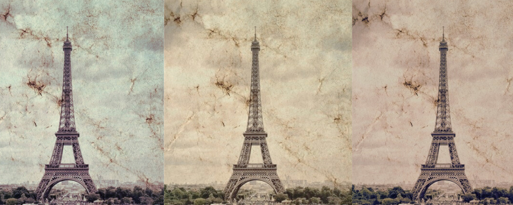
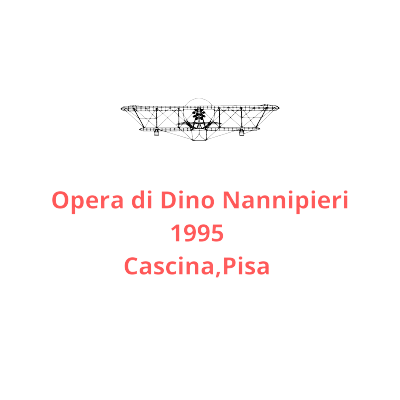

L'IMPRESA DELL'AVIATORE
Volò nei cieli di Parigi ad un'altezza di circa 1800 metri, con il suo biplano "Farman". Riuscì a stupire i parigini volando a spirale intorno alla Torre Eiffel, atterrando con un "vol planè" a motore spento. Si racconta che il Presidente francese Armand Fallières lo abbia definito "Le roi de l'air", stupito dopo averlo visto passare con il suo Farman sotto i ponti della Senna.

BUSTO: SCULTURA OMAGGIO A GIUSEPPE CEI
Per celebrare l'aviatore cascinese, il suo paese natale ha deciso di omaggiarlo con un busto in pietra situato appena fuori
le mura della vecchia città medievale.
Il luogo scelto è strategico in qaunto si trova all'interno di un'area verde molto frequentata ma anche vicino ad una strada molto trafficata, in modo che l'opera possa essere vista da più persone possibili.


DIGITALIZZAZIONE: il modello 3D dell'opera
Alla base della decisione di digitalizzare questa scultura si trovano molteplici motivazioni:
in primis quest'operazione può contribuire alla diffusione dell'opera stessa, e quindi della storia ad essa legata, facendo sì che le vicende di questo illustre cittadino siano conosciute anche al difuori del suo paese.
Inoltre, essendo l'opera posta all'aperto è soggetta all'azione degli agenti atmosferici:
la sua digitalizzazione può dunque contribuire a congelare il suo stato orginario nel tempo in modo da giugere alle generazioni successive.
Modello 3D
